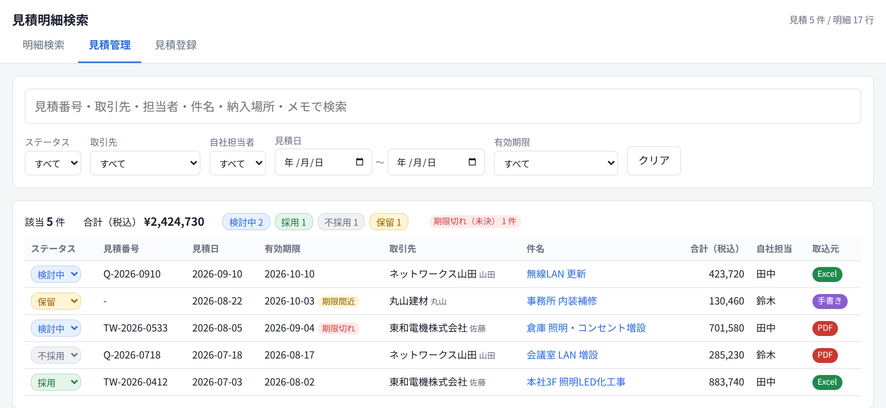
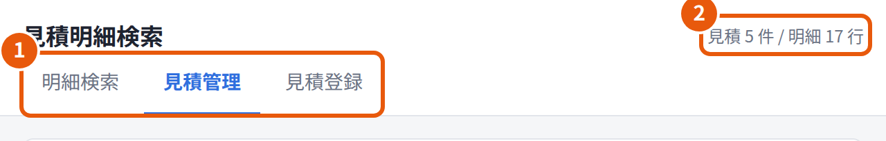
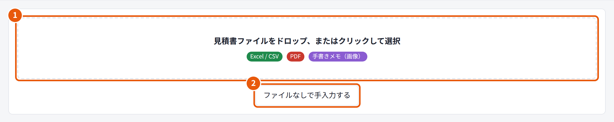
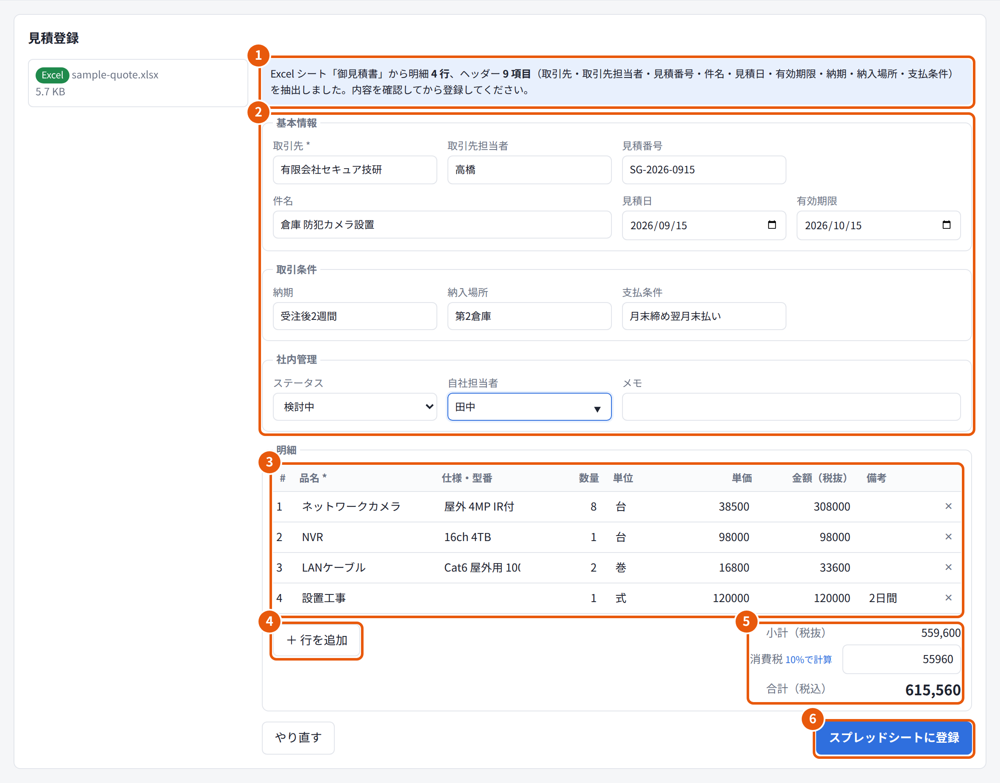
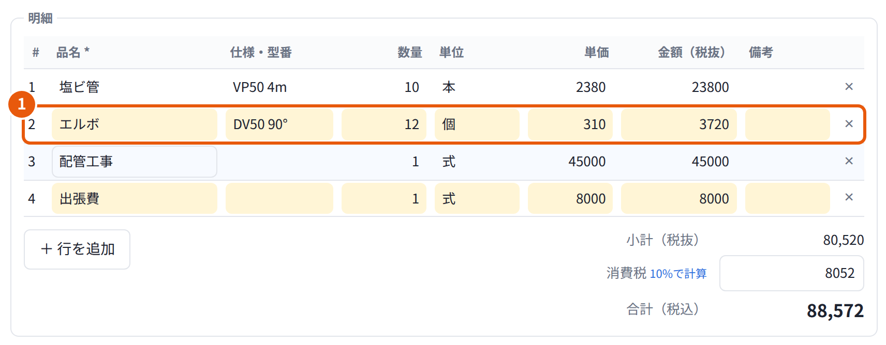
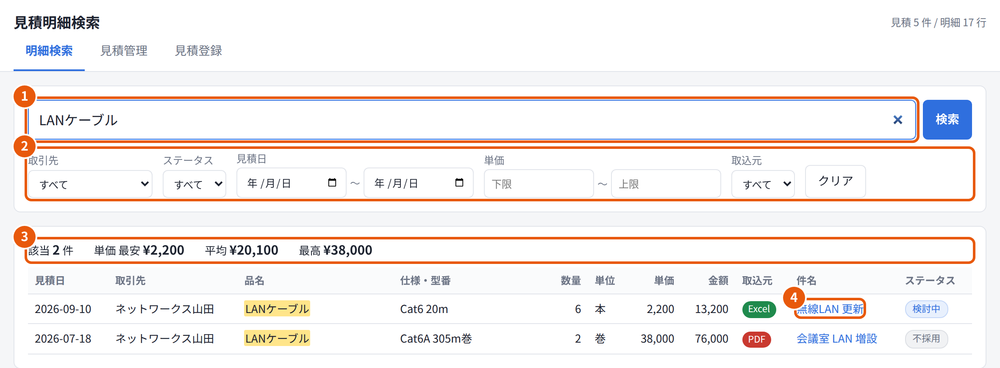
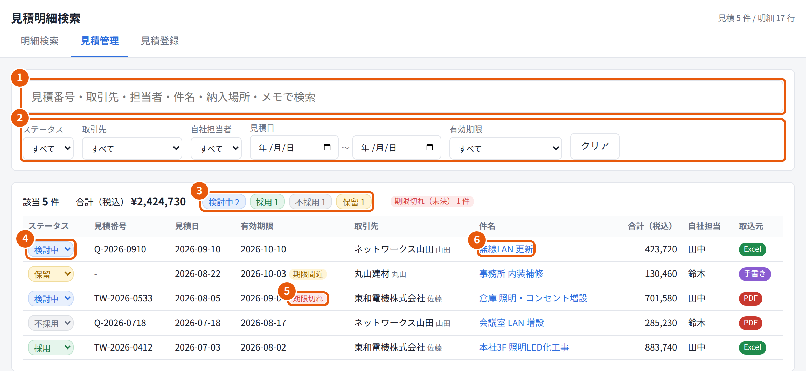
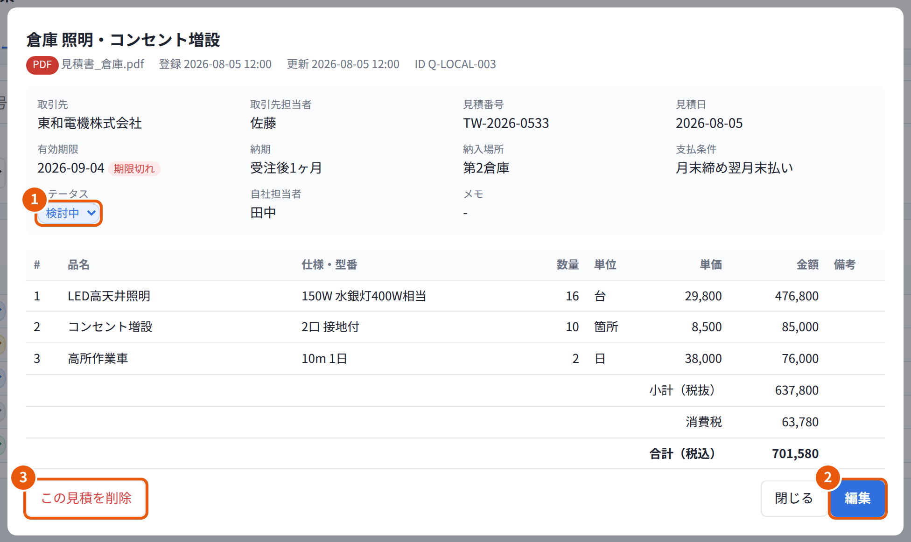
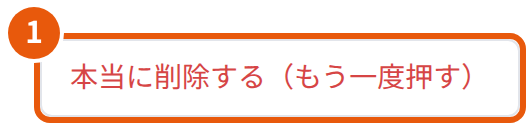

従業員向け
取扱説明書
取引先から届いた見積書（Excel・PDF・手書きメモ）を登録して、明細を検索したり、見積の状況を管理したりするアプリの使い方をまとめています。

はじめて使う方は、1章と2章を読んでから、3章の手順で見積書を1件登録してみてください。
「見積明細検索」は、取引先から届いた見積書を登録して、社内で共有・活用するためのアプリです。できることは大きく3つです。
→ 3章
→ 4章
→ 5章・6章
登録した内容は社内の Google スプレッドシートに保存され、アプリを使う全員で共有されます。
試作版についてのお知らせ
| ヘッダー情報 | 見積書1枚ごとの情報です。取引先、見積番号、件名、見積日、有効期限、合計金額などがあります。 |
|---|---|
| 明細 | 見積書の表の1行ずつの情報です。品名、仕様・型番、数量、単位、単価、金額があります。 |
| ステータス | 見積の検討状況です。検討中 採用 不採用 保留 の4つがあります（5章）。 |
| 取込元 | 見積をどこから登録したかです。Excel・PDF・手書き・手入力のどれかが記録されます。 |
よく使う場合は、ブラウザのブックマークに登録しておくと便利です。

| やりたいこと | 使う画面 | 説明 |
|---|---|---|
| 届いた見積書を登録したい | 見積登録 | 3章 |
| 品名や型番から、過去の見積の単価を調べたい | 明細検索 | 4章 |
| 見積の状況（ステータス・有効期限）を確認したい | 見積管理 | 5章 |
| 登録した見積を直したい・削除したい | 見積管理 などから詳細を開く | 6章 |
登録や変更をすると、画面の下に 登録しました（4 行） のようなメッセージが数秒間表示されます。入力漏れやエラーがあるときは赤いメッセージが表示されるので、内容に従って直してください（7章）。
見積書の登録は、次の3ステップです。
画面上部の 見積登録 タブを開きます。

| 種類 | ファイルの形式 | 読み取りの内容 |
|---|---|---|
| Excel・CSV | .xlsx .xls .csv | いちばん左（最初）のシートの表から、ヘッダー情報と明細を読み取ります。 |
| 文字を選択できる PDF（Excel や Word から作った PDF）から読み取ります。スキャンした PDF は準備中です。 | ||
| 手書きメモ | .jpg .png など | メモを撮った写真から読み取ります。準備中のため、今はサンプルの結果が表示されます。 |
ファイルを選ぶと自動で読み取りが始まり、確認画面が開きます。自動の読み取りは完全ではありません。必ず元の見積書と見比べてから登録してください。

| 区分 | 項目 | 入れる内容 | 例 |
|---|---|---|---|
| 基本情報 | 取引先必須 | 見積書を出した会社。過去に登録した会社は、入力欄に候補として表示されます。 | 東和電機株式会社 |
| 取引先担当者 | 取引先の担当者 | 佐藤 | |
| 見積番号 | 見積書に書かれた番号 | TW-2026-0412 | |
| 件名 | 見積の内容 | 本社3F 照明LED化工事 | |
| 見積日 | 見積書の発行日 | 2026/07/03 | |
| 有効期限 | 見積が有効な最終日 | 2026/08/02 | |
| 取引条件 | 納期 | 納品や工事の時期 | 受注後3週間 |
| 納入場所 | 納品や工事の場所 | 本社3F | |
| 支払条件 | 支払いのタイミングや方法 | 月末締め翌月末払い | |
| 社内管理 | ステータス | 見積の検討状況（5章）。最初は「検討中」です。 | 検討中 |
| 自社担当者 | この見積の社内の担当者。過去に入力した名前は候補として表示されます。 | 田中 | |
| メモ | 社内向けのメモ | 他社と相見積中 |

スプレッドシートに登録 を押し、画面の下に 登録しました（○ 行） と表示されたら完了です。登録した見積は、すぐに 明細検索 と 見積管理 に表示されます。
明細検索 タブでは、登録されているすべての見積から明細を探せます。「前に LAN ケーブルをいくらで買ったか」を調べるときなどに使います。

キーワードに一致した文字は黄色で表示されます。一度に表示されるのは500件までです。多いときは条件を足して絞り込んでください。
使い方の例
| 調べたいこと | 入れる条件 |
|---|---|
| 前に LAN ケーブルをいくらで買ったか | キーワード「LANケーブル」、ステータス「採用」 |
| 東和電機の見積の明細だけを見たい | 取引先「東和電機株式会社」 |
| 単価が1万円以上の明細を見たい | 単価の下限「10000」 |
| 今年度（4月以降）の見積だけを見たい | 見積日の開始「2026/04/01」 |
見積管理 タブでは、見積を1件1行の一覧で確認できます。見積日の新しい順に並びます。

ステータスは次のように使い分けます。部署で決まった使い方がある場合は、そちらに従ってください。
| ステータス | 使うとき |
|---|---|
| 検討中 | 社内で検討しているとき。見積を登録すると、最初はこのステータスになります。 |
| 採用 | この見積で発注することに決めたとき。 |
| 不採用 | 他社に決めたとき、または発注を見送ったとき。 |
| 保留 | 判断をいったん先送りするとき。 |
期限切れの見積を確認する
有効期限で「期限切れ（未決）」を選ぶと、期限が過ぎたのに「検討中」「保留」のままの見積が表示されます。取引先に期限の延長や再見積を依頼するか、結論が出ていればステータスを更新してください。
明細検索 や 見積管理 で件名をクリックすると、見積の詳細が開きます。

元のファイルが保存されている場合は、上部のファイル名をクリックすると開けます。詳細を閉じるときは 閉じる を押すか、詳細の外側をクリックします（Esc キーでも閉じられます）。
保存すると、明細は画面に入力されている内容にまるごと置き換わります。取込元と元のファイルは変わりません。

削除した見積は元に戻せません
記録として残しておきたい見積は、削除せずにステータスを 不採用 にしてください。
| こんなとき | こうしてください |
|---|---|
| 取引先を入力してください と表示される | 取引先は必須です。見積書を出した会社の名前を入力してください。 |
| 品名が入力された明細が 1 行もありません と表示される | 明細の品名を1行以上入力してください。 |
| 対応していない形式です と表示される | Excel・CSV・PDF・画像以外のファイルは読み取れません。Word などの書類は PDF に保存し直してから登録するか、手入力してください。 |
| 抽出に失敗しました と表示される | ファイルが壊れていないか、インターネットにつながっているかを確認してください。そのまま確認画面に手入力して登録することもできます。 |
| 明細がうまく読み取れない、列がずれる | 確認画面で直接直すか、＋ 行を追加 で入力してください。Excel の場合は、見出しの行（品名・数量・単価など）があるか確認してください（3-4）。 |
| 書類記載の合計 … が一致しません と表示される | 明細の抜けや読み間違い、消費税の端数を確認してください。見積書どおりになっていれば、そのまま登録してかまいません。 |
| 同じ見積を2回登録した、間違えて登録した | 見積管理 から見積を開き、編集 で直すか、不要なほうを削除してください（6章）。 |
| ほかの人が登録・変更した内容が表示されない | ブラウザでページを再読み込みしてください。 |
| 「エラー:」で始まる赤いメッセージが表示される | ページを再読み込みしてから、もう一度操作してください。直らない場合は、表示された内容を控えて管理者に連絡してください。 |
この説明書で解決しないことや、アプリへの要望は、社内の管理者に問い合わせてください。